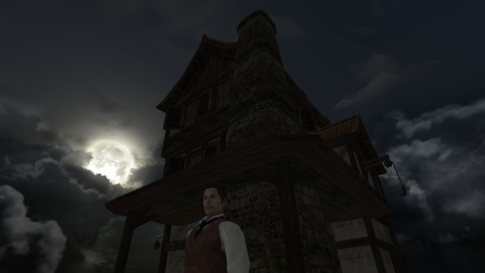
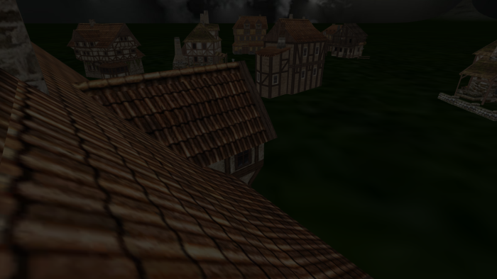
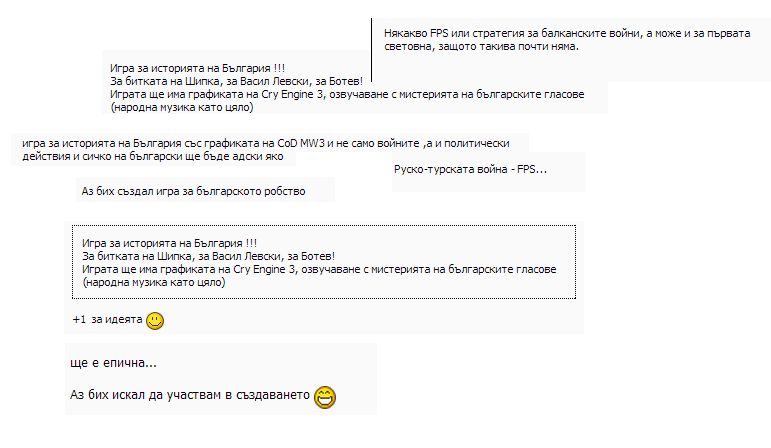

Bulgaria is a small developing country on the coast of Black Sea. It has it problems. Corruption is largely spread. The living standard is low. Many people live on the edge of poverty. Nevertheless, it has its ups as well and let me tell you about one of them.
Bulgaria as a state was established in 681 and 13 centuries are plenty of time. We are as rich in history as China is in population count. And we are willing to share many powerful, myth - like but real stories with the world. Thought that '300' was awesome? Let us show you what we can bring to the table.
1876, Bulgaria.
The time for revolution is nigh. Bulgarians have been enthralled for almost 500 years by the Ottoman Empire. Subject to many horrid inhumanities, including their own children being taken away to join the Ottoman Empire as a tax, they've suffered enough. The land is now full of revolunary spirits and hearts eager to repulse their oppressors.
Someone has to cross the Rubicon and start the fight and this where Ivan Kralicha comes in the picture. A man that has just escaped the heavily - guarded prison of Diarbekir placed deep into the Empire's heart. Despite being chained for almost a decade for being a revolutionary he has not lost the will to fight and after several months of travelling, he finally reaches his homeland and sets foot in the small town of Byala Cherkva.
Persuading the locals into joining the upcomming the war is up to him. Will people support him? Will he handle all obstacles in the way? What if he falls inlove while arranging everything? What if a traitor hinders his work? Will the people even uprise? Will the uprising succeed? Will he live to tell the story?
2014, Bulgaria
This prologue I just told you is based on the novel 'Under the Yoke' by the Bulgarian author Ivan Vazov who himself based it on the preparation and execution of the April Uprising. The book's mandatory for anyone interested in the country's history and culture. It has been translated to twenty or so languages. You can read it for free here.
We were inspired to build a 3D game that tells the story of 'Under the Yoke' in order to: provide our players with a meaningful storyline, touching experience and broad range of emotions familiarize the world with the poweful and tragic ending of the insurrection that led to the Russo - Turkish War of 1878 and the long waited indepedence stimulate foreigners to take a peek at the many fascinating aspects of our nation's history promote the book amongst Bulgarian students
As for gameplay, we are aiming to join to action - adventure genre, probably incorporating some RPG elements. The gameplay does not revolve around a single mechanic, rather it motivates to players to engage in different activities around the town of Byala Cherkva and the surrounding area. The player's quests will involve combating enemies with various weapons, following and chasing potential adversaries, occasionaly helping the townsfolk in order to better his reputation around the town and reduce suspiciousness around his origin and of course most importantly, planning and preparing the uprising.
We are also featuring multiple side objectives to keep the player's interest. They often won't be part of the main story in 'Under the Yoke' (such as collecting the pages of the Apostle's lost notebook or solving a hidden puzzle to find a weapon that will do him good in the upcoming quest) but will be strongly connected to it and improve the player's understanding of the historical times.
As noted in the next paragraph, the game runs entirely in the browser and you can go test it right away. Nevertheless, we feel obliged to showcase some of the work we've done so here are a few screenshots:
The character of Ivan Kralicha: 
The character of Dr. Sokolov:
The town of Byala Cherkva: 
Bai Marko's house:

The game's website is http://thralldom.net. Currently, anyone can click the 'Play' button at the top left and check the game by himself as long as he has an updated and supported browser. We are using many of the latest features of HTML5 and unfortunately only Chrome and Firefox have full support for them. We are actively building polyfills for Internet Explorer 11 and only a few things remain. As of this moment, we make no plans on supporting Opera and Safari.
We've conducted a small survey. Precisely 159 people filled the form we distributed amongst students, undergraduates and a small number of other adults (sadly, Bulgarians only). The results proved that the idea is worth our while: 138 (87%) said they are willing to give the game a try we identified about 86 (54%) of them to be gamers. That means that even nongamers are interested! * according to our data (not shown here), 58% of the enquired students have not read the book. Out of those, 73% are willing to read to book if they enjoy the game! That's a huge boost for the most famous piece of class Bulgarian literature.
We also spent some time in internet forums. Here is a screenshot  depicting the answers (in Bulgarian) to the topic "If you had the time and resources needed, what kind of a game would you create?" And here's the translation of some of the text:
'Some sort of FPS or strategy revolving around the Balkan Wars...'
'A game telling part of Bulgaria's history! A game about Vasil Levski, Hristo Botev, the battle of Shipka Pass! With the graphics quality of Cry Engine 3 and sounds of traditional Bulgarian folk music'
'I'd create a game about the Bulgarian thralldom'
'+1. That'd be epic, I'd love to participate!'
As you can see, we are not the only ones believing that our history is rich enough to intrigue gamers. It also further proves that if we produce the game correctly, we are going to have a large market penetration in our home country. Even though the market's small and the revenue's will be moderate, I believe it is a great first step that will provide us with much feedback.
When deciding on the most appropriate technology stack to use we considered many options but ultimately WebGL backed up by the open - source THREE.js won the competition. I'll use 'I' instead of 'we' until the paragraph's end since I'm the sole programmer. I absolutely love WebGL (<3 the portability) and JavaScript Typescript. I often find myself persuading my fellow programmer friends to give TS a try and what better way to convince them how awesome the language is but building a big, award - winning game. I am also using many other open - source libraries, the full list can be found at our credits page.
As for art, my collegue is using Blender, Maya, Mudbox and Photoshop. Blender is open - source, Maya and Mudbox are student licensed and Photoshop is on trial.
For game design, we are using a modified version of the three.js editor.